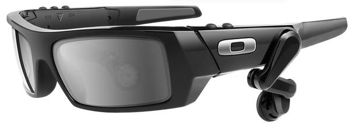

Prototype
I have started to work and develop an idea of how I want to present my prototype I'll start of by creating and designing a new and different approach to sell my glasses that know and understand how your feeling and also know your thougths on anything that you could be thinking about.I would like to try to also create a way that they could even somehow show how they work on people of all ages.
Menu

Intro Paragraph
The purpose of this prototype is to have a diffrent look on humans thought process. It will be an exciting way to view the human brain because when you press the button on the side of the glasses. It will show you a screen that demonstrates diffrernt parts of the human brain to show how you feel. I am going to try to create another button that can also create this virtual reality world so people can see other places.To get the experince of racism and gun violence but in a new sense.
Scenario
The events that we are more focused on is actual events that have happened to people. Who have experienced or seen these things happen to someone else. I thougth it would be good to include that because I feel like people will be able to relate. If they got a chance to see it for themselves in a unique kind of way. That approaches them confidently in a good way to help our community and society.Scenario Two
The buttons on the glasses will take you to either the thought process/function of the brain and then the other button will guide you to that virtual reality world. Which I figured all can relate to and get a feel for you with be able to see animations of actual people through the glasses.It allow you to see a unique perspective of racism and gun violence.Updates
| Problem | Solution |
|---|---|
| One of my buttons on the glasses broke | Ask if I get a engineer to look at the button |
| I had a few minor technical issues | Have a technician look at the problem on the screen |
